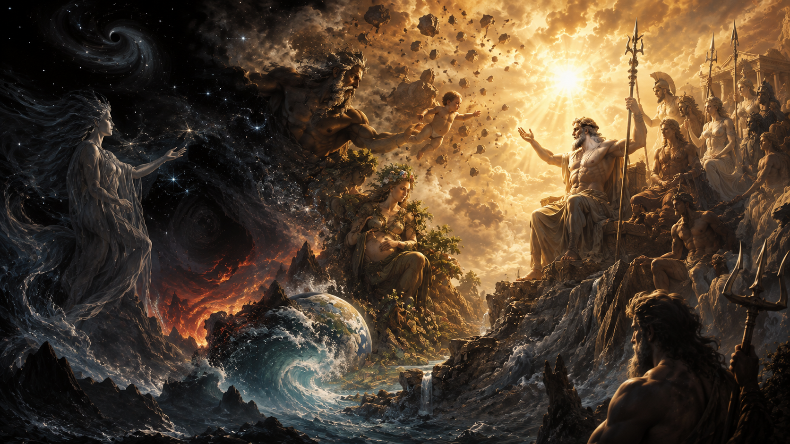

Başlangıçta ne Olimpos vardı ne Zeus ne de dünyayı yöneten tanrılar. Henüz gökyüzü yeryüzünden ayrılmamış, denizler sınırlarını bulmamış, tanrılar kendi krallıklarını kurmamıştı. Yunan mitolojisinin en eski ve en etkili kozmogoni anlatılarında evren, düzenli bir dünyanın yaratılmasıyla değil, Kaos adı verilen ilksel bir durumun ortaya çıkmasıyla başlar. Ardından Gaia, Tartaros ve Eros gibi ilk varlıklar belirir; gökyüzü, dağlar ve deniz şekillenir; Titanlar doğar ve sonunda kuşaklar boyunca sürecek büyük bir iktidar mücadelesi başlar.
Ancak Yunan mitolojisindeki yaratılışı bugün sıkça anlatıldığı gibi "Kaos vardı, sonra Gaia geldi, Zeus dünyayı yarattı" biçiminde birkaç cümleye indirgemek doğru değildir. Özellikle Hesiodos'un Theogonia adlı eseri, evrenin doğuşunu bir tanrının yoktan yaratma eylemi olarak değil, birbiri ardına ortaya çıkan ilksel varlıklar, doğumlar ve kuşak çatışmaları aracılığıyla düzenin kurulması şeklinde anlatır. Bu nedenle Yunan kozmogonisi, modern anlamda tek bir yaratıcı tanrı fikrinden oldukça farklıdır.
Üstelik elimizde yalnızca Hesiodos'un anlatısı yoktur. Orfik geleneklerde evrenin başlangıcı farklı biçimde açıklanır; Nyks, Khronos, kozmik yumurta ve Phanes gibi figürler ön plana çıkar. Homeros'un bazı dizelerinde ise Okeanos ve Tethys bütün tanrıların kökeniyle ilişkilendirilir. Bu farklılıklar birbiriyle çelişen "doğru ve yanlış" versiyonlar olarak değil, Antik Yunan dünyasında yaratılış hakkında birden fazla düşünce geleneğinin aynı anda var olabildiğinin kanıtı olarak değerlendirilmelidir.
Bu yüzden Yunan mitolojisinde evrenin yaratılışını anlamak için yalnızca "ilk tanrı kimdi" sorusuna cevap vermek yetmez. Kaos neydi? Gaia dünyayı gerçekten yarattı mı? Uranos nereden geldi? Titanlar neden doğdu? Kronos neden babasını devirdi? Zeus evreni yaratan tanrı mıydı, yoksa zaten oluşmuş kozmosun hükümdarı mıydı? Bütün bu sorular aynı büyük anlatının parçalarıdır.
Yunan Mitolojisinde Evren Nasıl Yaratıldı?
Yunan mitolojisinde evrenin yaratılışını anlatan en önemli erken kaynaklardan biri Hesiodos'un Theogonia adlı eseridir. Eserin adı "tanrıların doğuşu" anlamına gelir ve gerçekten de anlatının büyük bölümü evrenin fiziksel olarak nasıl şekillendiğinden çok, ilahi varlıkların nasıl ortaya çıktığını ve birbirleriyle nasıl ilişki kurduğunu açıklar. Bu nedenle Theogonia yalnızca bir yaratılış hikâyesi değil, aynı zamanda tanrısal soyların ve iktidarın kökenini açıklayan bir kozmogonidir.
Hesiodos'un anlatısına göre başlangıçta ilk ortaya çıkan varlık Kaostur. Ardından Gaia, yani geniş göğüslü Yeryüzü; Tartaros, yani yeraltının en derin bölgesi; ve Eros ortaya çıkar. Daha sonra Kaos'tan Erebos ile Nyks doğar; Nyks ve Erebos'un birlikteliğinden Aither ve Hemera meydana gelir. Gaia ise herhangi bir eş olmadan Uranos'u, dağları ve Pontos'u doğurur. Böylece başlangıçta biçimsiz ve ayrışmamış olan kozmik yapı giderek gökyüzü, yeryüzü, deniz, ışık ve karanlık gibi temel alanlara ayrılmaya başlar.
Burada modern yaratılış anlatılarıyla önemli bir fark vardır. Hesiodos'un metninde evreni bir anda yaratan tek bir tanrı yoktur. Dünya, gökyüzü ve diğer kozmik güçler kendileri de tanrısal varlıklar olarak doğarlar. Gaia yalnızca üzerinde yaşanan toprak değildir; aynı zamanda bir tanrıçadır. Uranos yalnızca fiziksel gökyüzü değil, kişileştirilmiş bir ilahi varlıktır. Nyks gecenin kendisidir, Pontos denizin ilksel biçimidir.
Evrenin düzen kazanması da barışçıl bir süreç değildir. Gaia ile Uranos'un çocukları olan Titanlar, Kykloplar ve Hekatonkheirler doğduktan sonra Uranos kendi çocuklarından korkar ve onları Gaia'nın derinliklerine hapseder. Gaia buna karşı çıkar ve oğlu Kronos'a babasını devirmesi için yardım eder. Kronos'un Uranos'u hadım etmesiyle ilk büyük kuşak çatışması yaşanır. Daha sonra Kronos da kendi çocuklarından korkacak ve onları yutacaktır. Zeus'un Kronos'u devirmesiyle ikinci büyük iktidar değişimi gerçekleşecek ve sonunda Olimpos düzeni kurulacaktır.
Dolayısıyla Yunan mitolojisindeki yaratılış, yalnızca dünyanın maddi olarak oluşması değildir. Kozmosun ortaya çıkışı aynı zamanda iktidarın kimde olacağının belirlenmesidir. Kaos'tan doğan ilk varlıklardan Zeus'un hükümdarlığına kadar uzanan süreç, evrenin giderek daha düzenli ve hiyerarşik bir yapıya kavuşmasını anlatır.
Kaos Nedir?
Yunan mitolojisindeki Kaos, modern dilde kullandığımız "karmaşa, düzensizlik veya kaotik ortam" anlamıyla birebir aynı değildir. Hesiodos'un Theogonia'sındaki Khaos, çoğu araştırmacı tarafından bir tür açıklık, yarık, boşluk veya uçurum olarak yorumlanır. Dolayısıyla "başlangıçta her şey birbirine karışmıştı ve buna Kaos deniyordu" şeklindeki modern açıklama, antik metnin anlamını tam olarak yansıtmaz.
Hesiodos, Kaos'un nasıl ortaya çıktığını açıklamaz. Metin basitçe "ilk önce Kaos oldu" diyerek başlar. Bu ifade, Kaos'un bir yaratıcı tarafından üretilmediğini ve anlatının ulaşabildiği en eski kozmik başlangıç noktası olduğunu gösterir. Ancak Kaos'un kendisi de pasif bir boşluk değildir; ondan Erebos ve Nyks doğar. Böylece karanlık ve gece, evrenin en erken güçleri arasına girer.
Kaos'un "boşluk" olarak anlaşılması, daha sonra ortaya çıkan Gaia ile karşılaştırıldığında daha anlamlı hâle gelir. Kaos açıklık ve ayrılma fikrini temsil ederken Gaia sağlam, kalıcı ve üzerinde yaşamın gelişebileceği yeryüzüdür. Evren böylece yalnızca yeni varlıkların doğmasıyla değil, farklı kozmik alanların birbirinden ayrılmasıyla oluşur.
Daha sonraki Yunan ve özellikle Roma yazarlarında Kaos kavramı değişmiştir. Ovidius'un Metamorfozlar'ında başlangıçtaki kaos, birbirine karışmış unsurların düzensiz kütlesi olarak tasvir edilir. Günümüzde "kaos" kelimesinin düzensizlik anlamıyla kullanılmasında bu daha sonraki yorumların etkisi büyüktür. Ancak Hesiodos'un erken anlatısını açıklarken Ovidius'un çok daha geç dönem kozmogonisini geriye doğru taşımamak gerekir.
Kaos'tan Sonra Kimler Ortaya Çıktı?
Hesiodos'a göre Kaos'tan hemen sonra ortaya çıkan temel varlıklar Gaia, Tartaros ve Erostur. Bu sıralama, Yunan mitolojisinin yaratılış anlayışının en dikkat çekici özelliklerinden birini ortaya koyar. Başlangıçta yalnızca fiziksel mekânlar oluşmaz; yaşamın devamını sağlayacak birleşme ve çekim gücü de evrenin ilk unsurlarından biri olarak ortaya çıkar.
Gaia, geniş göğüslü yeryüzüdür ve daha sonraki tanrısal soyların büyük bölümünün temelini oluşturur. Tartaros, yeryüzünün derinliklerinde bulunan ve daha sonra yenilmiş tanrıların hapsedileceği karanlık bölgedir. Ancak Hesiodos'un ilk bölümünde Tartaros yalnızca bir ceza mekânı değil, evrenin temel kozmik alanlarından biridir. Eros ise çok daha sonra bildiğimiz kanatlı aşk tanrısından farklı bir biçimde, yaratılışın en temel güçlerinden biri olarak karşımıza çıkar. Onun varlığı, tanrıların birbirleriyle birleşmesini ve yeni kuşakların doğmasını mümkün kılan kozmik çekim gücünü temsil eder.
Bu aşamada henüz Zeus, Poseidon, Hades veya diğer Olimpos tanrıları yoktur. Hatta Titanlar bile doğmamıştır. Yunan kozmogonisi önce evrenin temel yapı taşlarını oluşturur: yeryüzü, karanlık, gece, gündüz, göksel ışık, derinlik ve üreme gücü. Tanrılar arasındaki daha karmaşık aileler ancak bu kozmik temeller kurulduktan sonra ortaya çıkacaktır.
Gaia Kimdir ve Yaratılıştaki Rolü Nedir?
Gaia, Yunan mitolojisinde Yeryüzü'nün kişileştirilmiş tanrıçasıdır ve yaratılış anlatısının en önemli figürlerinden biridir. Hesiodos'un kozmogonisinde Kaos'tan sonra ortaya çıkan ilk varlıklar arasında yer alır. Ancak Gaia'yı yalnızca modern anlamda "Toprak Ana" şeklinde düşünmek eksik kalır. O, üzerinde tanrıların ve insanların yaşadığı fiziksel yeryüzü olmasının yanında, ilk büyük tanrısal kuşakların doğmasını sağlayan kozmik ana figürdür.
Gaia'nın ilk dikkat çekici özelliği, bazı varlıkları eş olmadan doğurabilmesidir. Hesiodos'a göre önce kendisini her taraftan kuşatacak yıldızlı Uranos'u doğurur. Ardından tanrıların barınacağı yüksek dağları ve dalgalı Pontos'u meydana getirir. Buradaki doğumlar insan biyolojisine göre düşünülmemelidir. Yeryüzünden gökyüzünün, dağların ve denizin doğması, evrenin temel coğrafi alanlarının mitolojik biçimde birbirinden türemesini anlatır.
Daha sonra Gaia, kendi doğurduğu Uranos ile birleşir ve bu birlikten on iki Titan, üç Kyklop ve üç Hekatonkheir doğar. Böylece yaratılış hikâyesi ilk büyük tanrısal hanedana ulaşır. Ancak bu noktada evren henüz istikrarlı değildir. Uranos çocuklarının gücünden korkar ve onları Gaia'nın içinde hapseder. Gaia hem fiziksel olarak çocuklarını içinde taşımak zorunda kalır hem de onların baskı altında tutulmasına öfkelenir.
Bu olay, yaratılış mitinin ilk büyük siyasi çatışmasını başlatır. Gaia, çocuklarından Uranos'a karşı çıkmalarını ister ve yalnızca Kronos cesaret gösterir. Gaia ona keskin bir orak verir; Kronos babasını pusuya düşürerek hadım eder ve Uranos'un egemenliğine son verir.
İlginç olan şu ki Gaia daha sonra Kronos'a karşı Zeus'un yanında da yer alacaktır. Kronos kendi çocuklarını yutmaya başladığında Gaia ve Uranos, Rhea'ya Zeus'u kurtarması için yardım eder. Titanomachia sırasında Gaia'nın kehanetleri Zeus'un zaferinde rol oynar. Bu değişken tutum, Gaia'nın tek bir siyasi tarafın tanrıçası olmadığını gösterir. O daha çok kozmik dengenin ve kuşaklar arasındaki dönüşümün kaynağıdır.
Uranos Nasıl Ortaya Çıktı?
Uranos, yani yıldızlı Gökyüzü, Hesiodos'a göre Gaia tarafından herhangi bir eş olmadan doğurulmuştur. Gaia onu kendisini tamamen örtecek ve tanrıların güvenli yurdu olacak biçimde meydana getirir. Böylece yeryüzü ile gökyüzü, yaratılışın ilk büyük kozmik çiftlerinden birini oluşturur.
Gaia ile Uranos'un birleşmesinden önce on iki Titan doğar: Okeanos, Koios, Krios, Hyperion, İapetos, Kronos, Theia, Rhea, Themis, Mnemosyne, Phoibe ve Tethys. Bunların yanı sıra tek gözlü Kykloplar Brontes, Steropes ve Arges ile yüz kollu Hekatonkheirler Kottos, Briareos ve Gyges dünyaya gelir. Bu çocuklar daha sonra Yunan mitolojisindeki tanrılar soyunun, doğal güçlerin ve büyük kozmik savaşların temelini oluşturacaktır.
Ancak Uranos çocuklarından hoşlanmaz. Hesiodos onun özellikle güçlü ve olağanüstü çocuklarından nefret ettiğini ve onları doğar doğmaz Gaia'nın içinde gizlediğini anlatır. Bu davranış yalnızca zalim bir babanın eylemi değildir; gökyüzünün yeryüzünün üzerine sürekli kapanarak doğan varlıkların dışarı çıkmasına izin vermemesi şeklinde kozmogonik bir sembolizm de taşır. Evrenin gelişebilmesi için gökyüzü ile yeryüzünün birbirinden ayrılması gerekir.
Kronos Uranos'u Neden Devirdi?
Uranos'un çocuklarını Gaia'nın derinliklerine hapsetmesi, Yunan mitolojisindeki ilk büyük kuşak çatışmasını başlatır. Hesiodos'un Theogonia'sında Gaia bu baskıdan acı çeker ve çocuklarına babalarına karşı gelmeleri için seslenir. Titanların çoğu Uranos'un gücünden çekinirken yalnızca en gençleri olan Kronos annesinin planını kabul eder. Gaia, adamant olarak tanımlanan son derece sert maddeden keskin dişli bir orak hazırlar ve Kronos'u pusuya yerleştirir. Gece olduğunda Uranos Gaia'yla birleşmek üzere yeryüzünün üzerine iner; Kronos saklandığı yerden çıkarak babasını hadım eder ve böylece onun egemenliğini sona erdirir.
Bu olay yalnızca şiddet içeren bir aile çatışması değildir. Kozmogonik açıdan gökyüzü ile yeryüzünün birbirinden ayrılmasını temsil eden en önemli sahnelerden biridir. Uranos'un Gaia'nın üzerine sürekli kapanması, çocukların onun içinden dışarı çıkmasını engeller. Kronos'un müdahalesiyle gökyüzü geri çekilir ve yeni tanrısal kuşağın dünyada yer alabileceği alan açılır. Böylece yaratılışın ilerlemesi için ilk ilahi hükümdarın iktidarının kırılması gerekir.
Uranos'un hadım edilmesi sırasında dökülen kan da yeni varlıkların doğmasına yol açar. Hesiodos'a göre kan damlaları Gaia'nın üzerine düştüğünde Erinyes, Gigantlar ve Meliai adı verilen dişbudak perileri ortaya çıkar. Erinyes özellikle aile içi suçların, kan dökmenin ve yemin ihlallerinin cezalandırılmasıyla bağlantılı korkutucu tanrıçalardır.
Uranos'un denize düşen kesilmiş cinsel organı ise yaratılış anlatısının en ünlü doğumlarından birine yol açar. Hesiodos, organın çevresinde oluşan beyaz köpükten Aphrodite'nin doğduğunu anlatır. Tanrıça önce Kythera'ya, ardından Kıbrıs'a ulaşır ve burada tanrılar dünyasına katılır. Bununla birlikte Aphrodite'nin kökeni bütün Yunan geleneğinde aynı değildir. Homeros'un İlyada'sında tanrıça Zeus ile Dione'nin kızı olarak gösterilir.
Uranos'un devrilmesiyle Kronos iktidarı ele geçirir; ancak yeni hükümdarın geçmişten ders aldığı söylenemez. Babasının kendi çocuklarından korkması gibi, Kronos da gelecekte aynı korkunun esiri olacaktır. Üstelik Uranos ve Gaia, Kronos'a kendi çocuklarından biri tarafından devrileceğini önceden bildirir.
Kronos Dönemi ve Titanların Egemenliği
Uranos'un düşüşünün ardından evren Titan kuşağının egemenliğine girer ve Kronos onların en güçlü hükümdarı hâline gelir. Bu dönem daha sonraki Yunan ve Roma edebiyatında zaman zaman insanlığın acıdan uzak yaşadığı Altın Çağ ile ilişkilendirilmiştir. Hesiodos'un İşler ve Günler adlı eserinde Kronos dönemindeki altın insan soyunun zahmetsiz, uzun ve huzurlu bir yaşam sürdüğü anlatılır.
Titanların kendileri de tek tip bir tanrılar grubu değildir. Okeanos dünyanın çevresini kuşatan ilksel suyla, Hyperion göksel ışıkla, Themis ilahi düzen ve yasayla, Mnemosyne hafızayla, Phoibe kehanet ve parlaklıkla ilişkilendirilir. Bu Titanlardan daha sonraki tanrısal kuşakların büyük bölümü doğacaktır. Hyperion ile Theia'nın çocukları Helios, Selene ve Eos güneş, ay ve şafağı temsil eder; İapetos'un çocukları arasında Atlas, Prometheus ve Epimetheus bulunur.
Kronos'un eşi ve aynı zamanda kız kardeşi Rhea olur. Bu birlikten Hestia, Demeter, Hera, Hades, Poseidon ve sonunda Zeus doğacaktır. Bunlar geleceğin Olimpos çekirdek tanrılarıdır. Ancak Kronos, kendi babasını nasıl devirdiğini unutmaz. Gaia ile Uranos'tan, çocuklarından birinin kendisini tahttan indireceğine ilişkin kehaneti öğrendiğinde iktidarını korumak için Uranos'tan bile daha farklı bir yöntem seçer: Çocuklarını doğdukları anda yutar.
Bu sahne bazen Kronos'un çocuklarını öldürdüğü şeklinde anlatılır; ancak Hesiodos'un metni onların öldüğünü söylemez. Tanrısal çocuklar Kronos'un içinde yaşamaya devam eder ve daha sonra yeniden dışarı çıkarlar.
Kronos Çocuklarını Neden Yuttu?
Kronos'un çocuklarını yutmasının temel nedeni kehanettir. Gaia ve Uranos, onun kendi güçlü oğullarından biri tarafından devrileceğini önceden haber vermiştir. Kronos için bu yalnızca ihtimal değildir; kendi geçmişinin tekrarlanmasıdır. Babası Uranos'u annesinin yardımıyla deviren kişi olarak, oğullarından birinin aynı şeyi kendisine yapabileceğini herkesten iyi bilir.
İlk olarak Hestia, ardından Demeter, Hera, Hades ve Poseidon onun bedenine gider. Rhea her doğumda yeni çocuğunu kaybetmek zorunda kaldığı için sonunda Gaia ve Uranos'tan yardım ister. Altıncı çocuğu Zeus'a hamileyken onu Kronos'tan nasıl kurtarabileceğini sorar. Bunun üzerine Rhea Girit'e gönderilir ve Zeus'u burada gizlice doğurur. Yeni doğmuş bebeğin yerine ise bir taşı kundak bezlerine sararak Kronos'a verir.
Zeus'un kurtarılması Yunan kozmogonisinin kritik dönüm noktalarından biridir. İlk kez kuşak çatışması henüz hükümdar bütün rakiplerini etkisiz hâle getiremeden yön değiştirir. Bu motif Yunan mitolojisinde daha sonra Oidipus gibi başka anlatılarda da görülecek temel düşüncelerden biridir: Kaderden kaçmak için yapılan eylem, bazen kaderin gerçekleşmesine giden yolu açar.
Zeus Kronos'u Nasıl Devirdi?
Zeus yetişkinliğe ulaştığında ilk amacı Kronos'un yuttuğu kardeşlerini kurtarmaktır. Hesiodos'un Theogonia'sında bu planın önemli figürlerinden biri Okeanid Metistir. Metis'in yardımıyla Kronos, yuttuğu çocukları tekrar dışarı çıkarır. Kronos önce Rhea'nın verdiği taşı, ardından yuttuğu çocukları ters sırayla çıkarır ve böylece Zeus'un kardeşleri yeniden dünyaya döner.
Kardeşlerin kurtarılması Zeus'u hemen evrenin hükümdarı yapmaz. Kronos ve diğer Titanlar hâlâ büyük bir güce sahiptir. Böylece yeni ve eski tanrısal kuşaklar arasında Titanomachia, yani Titanlar Savaşı başlar. Hesiodos bu savaşın on yıl sürdüğünü anlatır. Bir tarafta Kronos ve Titanların büyük bölümü, diğer tarafta Zeus ile kardeşleri bulunur.
Savaşın dengesi, Zeus'un Gaia'nın tavsiyesiyle Uranos'un daha önce hapsettiği Kykloplar ile Hekatonkheirleri özgür bırakmasıyla değişir. Kykloplar Zeus'a yıldırımı ve gök gürültüsünü, Poseidon'a üç dişli yabayı verir. Böylece geleceğin Olimpos hükümdarlarının en tanınmış ilahi silahları, eski kuşağın baskı altında tuttuğu varlıkların yardımıyla ortaya çıkar.
Hekatonkheirler ise savaş alanında doğrudan fiziksel güç sağlar. Hesiodos'un savaş tasviri yalnızca tanrılar arasında yaşanan büyük bir kavga değildir; gökyüzü, yeryüzü, deniz ve Tartaros'un sarsıldığı kozmik bir felaket gibi anlatılır.
Titanomachia Sonunda Ne Oldu?
Zeus ve müttefiklerinin zaferiyle Titanomachia sona erer. Kronos'un yanında savaşan Titanlar yenilir ve Tartaros'a hapsedilir. Hekatonkheirler onların bekçileri olarak görevlendirilir. Hesiodos, Tartaros'u yeryüzünün altında olağanüstü uzak bir bölge olarak tasvir eder.
Ancak bütün Titanların aynı cezayı aldığı düşünülmemelidir. Okeanos gibi Zeus'a karşı savaşmayan figürler yerlerini korur. Atlas ise Tartaros'a kapatılmak yerine dünyanın batı sınırlarında göğü taşımaya mahkûm edilir. Prometheus'un Zeus'la çatışması ise Titanomachia'dan farklı bir süreçte gelişir ve ateş hırsızlığı nedeniyle zincire vurulmasıyla sonuçlanır.
Titanomachia'nın sonunda yeni bir düzen ortaya çıkar; ancak Zeus'un hükümdarlığı henüz bütünüyle güvende değildir. Gaia'nın soyundan gelen başka güçler Olimpos düzenine meydan okumaya devam edecektir. Gigantlarla yapılan Gigantomakhia ve Typhon'la yaşanan büyük mücadele, Zeus'un egemenliğinin yeni sınavları hâline gelir.
Bu anlatıların kronolojisi de birbirine karıştırılmamalıdır. Titanomachia ile Gigantomakhia aynı savaş değildir. Titanomachia, Zeus ve müttefiklerinin Kronos'un Titan kuşağına karşı savaşıdır. Gigantomakhia ise daha sonraki bir gelenekte Olimpos tanrılarıyla Gigantlar arasında gerçekleşir.
Zeus Evreni Yaratan Tanrı mıydı?
Yunan mitolojisi hakkında en sık yapılan hatalardan biri Zeus'u evrenin yaratıcısı olarak tanımlamaktır. Hesiodos'un kozmogonisine göre Zeus ortaya çıktığında evrenin temel yapıları çoktan vardır. Kaos, Gaia, Tartaros, Eros, Nyks, Uranos, Pontos ve Titan kuşakları Zeus'un doğumundan çok önce ortaya çıkmıştır. Zeus gökyüzünü yaratmaz; gökyüzü Uranos olarak zaten vardır.
Zeus'un rolü yaratıcı olmaktan çok düzenleyici ve hükümdar olmaktır. Kronos'u ve Titanların direnişini yenerek yeni ilahi hiyerarşinin başına geçer, tanrıların görevlerini ve onurlarını düzenler ve kozmik egemenliği istikrarlı hâle getirir. Bu nedenle Yunan kozmogonisinin ulaştığı son nokta "Zeus her şeyi yarattı" değil, "Zeus zaten oluşmuş evrende kalıcı bir düzen kurdu" düşüncesidir.
Zeus'un hükümdarlığını önceki kuşaklardan ayıran önemli özelliklerden biri de yalnızca zor kullanmamasıdır. Uranos çocuklarını bastırmış, Kronos çocuklarını yutmuştu. Zeus ise potansiyel rakipleriyle ittifaklar kurar, tanrılara görev ve ayrıcalıklar dağıtır ve farklı güçleri kendi düzeninin içine dahil eder.
Zeus, Poseidon ve Hades Evreni Nasıl Paylaştı?
Titanların yenilmesinden sonra Zeus, Poseidon ve Hades'in evreni kendi aralarında kura yoluyla paylaştığı anlatı özellikle Homeros'un İlyada'sında açık biçimde karşımıza çıkar. Kurada Zeus'a gökyüzü, Poseidon'a deniz, Hades'e ise sisli yeraltı dünyası düşer. Yeryüzü ve Olimpos ise ortak alan olarak kalır.
Bu ayrıntı popüler anlatılardaki "Zeus dünyayı aldı, Poseidon denizi, Hades yeraltını" özetinden daha inceliklidir. Zeus her şeyin kişisel sahibi değildir. Gökyüzündeki üstün konumu ve tanrıların kralı olması ona genel bir otorite kazandırsa da Poseidon deniz üzerinde güçlü ve bağımsız bir yetki taşır, Hades ise ölülerin ülkesini yönetir.
Bu paylaşım yaratılış sürecinin son aşamalarından birini temsil eder. Başlangıçta Kaos'tan ortaya çıkan ve birbirine geçen kozmik alanlar, artık belirgin yöneticilere ve işlevlere sahiptir. Kozmos artık yalnızca var olan bir dünya değildir; işlevleri paylaştırılmış, tanrısal hiyerarşisi belirlenmiş bir düzen hâline gelmiştir.
İnsanlar Yunan Mitolojisinde Nasıl Yaratıldı?
Yunan mitolojisinde insanın yaratılışı, tanrıların doğuşu kadar tek ve sabit bir anlatıya sahip değildir. Hesiodos'un kozmogonisi tanrıların ve kozmik güçlerin ortaya çıkışını ayrıntılı biçimde anlatırken insanın ilk kez nasıl yaratıldığını aynı açıklıkta vermez. İnsan soyu anlatının içinde zaten vardır ve özellikle Prometheus ile Zeus arasındaki çatışmalar sırasında önemli hâle gelir.
Hesiodos'un İşler ve Günler adlı eserinde insanlığın kökenini açıklayan en önemli anlatılardan biri Beş Soy Mitidir. İlk olarak Kronos döneminde yaşayan Altın Soy gelir. Bu insanların hayatı zahmetsizdir; yaşlanmanın acılarını çekmez, toprak kendiliğinden ürün verir ve ölüm onlara uyku gibi gelir. Ardından Gümüş Soy ve Bronz Soy gelir. Hesiodos bundan sonra dikkat çekici biçimde Kahramanlar Soyunu anlatır. Son olarak Hesiodos'un kendi yaşadığı çağ olan Demir Soyu gelir; emek, adaletsizlik, ahlaki bozulma ve sürekli sıkıntı bu çağın temel özellikleridir.
Prometheus'un insanları toprak ve sudan biçimlendirdiği anlatı ise özellikle daha sonraki mitografik gelenekte belirginleşir. Pseudo-Apollodoros, Prometheus'un insanları su ve topraktan yarattığını açık biçimde söyler. Böylece geç gelenekte Prometheus yalnızca insanlığın koruyucusu değil, doğrudan biçimlendiricisi hâline gelir.
Pandora Neden Yaratıldı?
Yunan yaratılış anlatısında insanlığın kaderini değiştiren en önemli figürlerden biri Pandoradır. Ancak Pandora'nın hikâyesi modern anlatılarda çoğu zaman "ilk kadın yaratıldı ve kutusunu açarak kötülükleri dünyaya saldı" şeklinde basitleştirilir. Hesiodos'un metinlerine bakıldığında anlatının Prometheus ile Zeus arasındaki daha büyük çatışmanın parçası olduğu görülür.
Prometheus Mekone'de Zeus'u kandırmaya çalışmış, ardından Zeus'un insanlardan sakladığı ateşi çalarak yeniden onlara ulaştırmıştır. Zeus bu ikinci hamleden sonra Prometheus'u cezalandırırken insanlara da karşılık vermek ister. Hephaistos toprak ve sudan güzel bir kadın biçimlendirir, Athena onu süsler ve el sanatlarını öğretir, Aphrodite çekicilik verir, Hermes ise kurnazlık ve aldatıcı sözlerle donatır. Tanrıların her birinin ona bir armağan vermesi nedeniyle kadın Pandora, yani "bütün armağanlara sahip olan" adıyla anılır.
Burada dikkat edilmesi gereken nokta, Pandora'nın yalnızca kişisel bir karakter değil, Hesiodos'un insan yaşamındaki sıkıntıların kökenini açıklamak için kullandığı kozmogonik bir figür olmasıdır. Pandora Epimetheus'a gönderilir. Ardından ünlü kap açılır ve insan yaşamını kuşatan sıkıntılar dışarı çıkar.
Bu kapın aslında bir kutu olmadığı da önemlidir. Hesiodos'un kullandığı sözcük pithostur ve büyük bir depolama küpünü ifade eder. "Pandora'nın kutusu" ifadesi daha sonraki çeviri geleneğinin sonucudur. Kapta kalan Elpis kavramı da çoğunlukla "umut" diye çevrilir.
Deukalion Tufanı ve İnsanlığın Yeniden Başlangıcı
Yunan mitolojisinde insan soyunun bir kez ortaya çıktıktan sonra kesintisiz devam ettiği düşünülmez. Zeus'un insanlığın yozlaşmasına öfkelenerek büyük bir tufan gönderdiği anlatı, insanlığın neredeyse tamamen yok olduğu ve yeniden başladığı en önemli mitlerden biridir. Bu hikâyenin merkezinde Deukalion ve eşi Pyrrha bulunur.
Deukalion, daha sonraki geleneğe göre Prometheus'un oğludur. Pyrrha ise Epimetheus ile Pandora'nın kızıdır. Böylece tufandan kurtulacak çift, Prometheus ve Epimetheus soylarını bir araya getirir. Zeus insanları yok etmeye karar verdiğinde Prometheus oğlunu yaklaşan felaket konusunda uyarır.
Sular çekildikten sonra Deukalion ile Pyrrha insan soyunun nasıl yeniden çoğalacağını bilemez. Tanrısal bir kehanet onlara "büyük annenizin kemiklerini omuzlarınızın üzerinden atın" der. Deukalion buradaki büyük annenin Gaia olduğunu anlar. Çift taşları arkalarına atmaya başlar. Deukalion'un attığı taşlardan erkekler, Pyrrha'nın attıklarından kadınlar doğar ve insan soyu yeniden başlar.
Orfik Yaratılış Miti Nedir?
Yunan mitolojisinde evrenin yaratılışı denildiğinde çoğu zaman yalnızca Hesiodos anlatılır; oysa antik dünyada bundan farklı kozmogoniler de vardı. Bunların en önemlileri genel olarak Orfik gelenek adı altında toplanan yaratılış anlatılarıdır. "Orfik" adı, efsanevi şair ve müzisyen Orpheus'a atfedilen dini şiirler ve ritüel geleneklerle ilişkilidir.
Bu nedenle "Orfik yaratılış miti şöyledir" diyerek tek bir sabit anlatı vermek dikkat gerektirir. Farklı Orfik kozmogoniler arasında önemli ayrıntı farklılıkları vardır. Yine de bazı ortak unsurlar belirgindir: Khronos (Zaman), Nyks (Gece), kozmik yumurta ve Phanes gibi figürler Hesiodos'un anlatısında sahip olmadıkları merkezi rollere kavuşur.
Bazı Orfik geleneklerde başlangıçta Khronos, yani Zaman bulunur. Buradaki Khronos, Titan Kronos ile karıştırılmamalıdır. Yunanca adların benzerliği modern anlatılarda sık sık iki figürün birleşmesine yol açmıştır. Khronos'tan Aither ve Khaos gibi ilksel güçlerin ortaya çıktığı, ardından gümüş renkli veya parlak bir kozmik yumurtanın meydana geldiği anlatılır.
Orfik kozmogoninin önemi, Yunanların evrenin kökeni hakkında yalnızca tek bir hikâyeye sahip olmadığını göstermesidir. Kaos'tan Gaia'ya ve Uranos'a uzanan Hesiodik anlatı en ünlü versiyon olsa da, kozmik yumurta ve Phanes çevresinde gelişen farklı dini-felsefi yaratılış gelenekleri de antik dünyada varlığını sürdürmüştür.
Kozmik Yumurta ve Phanes Ne Anlama Gelir?
Kozmik yumurta, Orfik yaratılış düşüncesinin en dikkat çekici sembollerinden biridir. Yumurta, henüz ayrışmamış fakat içinde bütün yaşam potansiyelini taşıyan kapalı bir bütün olarak düşünülebilir. Kabuğun kırılmasıyla içeride saklı olan yaratıcı güç görünür hâle gelir ve kozmosun farklı bölümleri oluşmaya başlar.
Phanes'in yumurtadan çıkışı bu nedenle yalnızca bir tanrının doğumu değildir. Işığın görünür hâle gelmesi, yaratıcı gücün ortaya çıkması ve evrenin üretken bir düzene girmesi anlamına gelir. Phanes'in bazı Orfik geleneklerde Eros'la özdeşleştirilmesi de tesadüfi değildir.
Kozmik yumurtayı da bütün Yunanların ortak yaratılış inancı olarak görmek doğru değildir. Hesiodos'un Theogonia'sında kozmik yumurta bulunmaz. Bu motif esas olarak Orfik ve bazı daha geç kozmogonik geleneklerle ilişkilidir.
Homeros'a Göre Evrenin Kökeni Farklı mıydı?
Homeros'un İlyada ve Odysseia'sı Hesiodos'un Theogonia'sı gibi sistematik bir yaratılış hikâyesi anlatmaz. Buna rağmen bazı dizeler, Homeros çevresindeki kozmolojik düşüncenin Hesiodos'un anlatısından farklı olabileceğini düşündüren önemli ipuçları verir. Özellikle İlyada'da Okeanos "tanrıların doğuşunun kaynağı" veya "bütün tanrıların kökeni" gibi ifadelerle anılırken Tethys de onun yanında yer alır.
Okeanos'u modern anlamda Atlantik Okyanusu olarak düşünmek de yanıltıcıdır. Erken Yunan kozmolojisinde Okeanos, yerleşik dünyanın çevresini bir nehir gibi kuşatan dev kozmik su akıntısıdır. Tanrı olarak kişileştirilir ve Titan soyunda yer alır. Tethys ile birleşerek çok sayıda nehir tanrısının ve Okeanidlerin ebeveyni olur.
Bu tür ayrımlar, "Yunan mitolojisinin yaratılış hikâyesi"nden söz ederken aslında birbiriyle konuşan birden fazla yaratılış geleneğini ele aldığımızı hatırlatır.
Yunan Mitolojisinde Kaos ile Kozmos Arasındaki Fark
"Kaos'tan kozmos doğdu" ifadesi Yunan yaratılışını anlatırken sık kullanılır ve genel düşünceyi yakalasa da iki kavramın anlamını dikkatli kullanmak gerekir. Khaos Hesiodos'ta başlangıçta ortaya çıkan ilksel açıklık veya boşlukla ilişkilidir. Kosmos ise Yunancada düzen, düzenleme ve güzel biçimde kurulmuş bütün anlamlarını taşıyabilir.
Yine de Theogonia'nın bütün yapısı incelendiğinde evrenin giderek daha düzenli hâle geldiği açıktır. Başlangıçta bağımsız ilksel güçler belirir; Gaia göğü ve denizi doğurur; tanrısal kuşaklar çoğalır; Uranos'un baskısı kırılır; Kronos devrilir; Titanomachia sonunda Zeus üstün gelir ve tanrıların görevleri belirlenir.
Bu nedenle Yunan yaratılış mitinin son hedefi yalnızca maddi evreni açıklamak değildir. Neden dünyada gece ve gündüz var? Neden gökyüzü yeryüzünden ayrıdır? Neden Zeus kraldır? Neden Poseidon denizi yönetir? Neden Titanlar Tartaros'tadır? Theogonia ve onun çevresindeki mitolojik gelenekler bütün bu soruları aynı geniş kozmik tarihin parçaları hâline getirir.
Yunan Mitolojisinde Evrenin Yaratılışı Ne Anlama Gelir?
Yunan kozmogonisini diğer birçok yaratılış anlatısından ayıran temel özelliklerden biri, evrenin yoktan ve tek bir iradeyle yaratılmamasıdır. Hesiodos'un dünyasında başlangıçta Kaos ortaya çıkar, ardından Gaia ve başka ilksel güçler belirir. Yeni varlıklar doğum yoluyla meydana gelir ve evrenin yapısı kuşaklar arasındaki ilişkilerle genişler.
Bu durum yaratılışın aynı zamanda bir soy anlatısı olmasını sağlar. Dağlar, denizler, nehirler, güneş, ay, şafak, gece, uyku, ölüm, hafıza ve adalet gibi kavramlar birbirleriyle akrabalık bağları içinde düşünülür.
İkinci temel tema kuşak çatışmasıdır. Uranos kendi çocuklarının ortaya çıkmasını engeller ve Kronos tarafından devrilir. Kronos kendi çocuklarından korkar ve Zeus tarafından devrilir. Zeus ise önceki iki hükümdardan farklı olarak iktidarını yalnızca baskı üzerine kurmayıp başka güçleri kendi düzenine dahil etmeyi öğrenir.
Yunan Yaratılış Mitleri Mezopotamya ve Yakın Doğu'dan Etkilenmiş Olabilir mi?
Yunan mitolojisindeki evrenin yaratılışı anlatılırken çoğu popüler içerik yalnızca tanrıların soy ağacını sıralar. Oysa özellikle Hesiodos'un Theogonia'sındaki bazı motifler, Yunan dünyasının Doğu Akdeniz ve Yakın Doğu kültürleriyle kurduğu ilişkiler dikkate alındığında daha geniş bir tarihsel bağlam kazanır.
En dikkat çekici paralelliklerden biri Hitit-Hurri geleneğinde korunmuş olan Gökte Krallık anlatısıyla görülür. Bu metinlerde göksel hükümdarlık kuşaklar arasında el değiştirir. Özellikle Kumarbi'nin Anu'nun cinsel organını ısırması ile Hesiodos'un Kronos'un Uranos'u hadım etmesi arasında dikkat çekici bir yapısal benzerlik vardır.
Mezopotamya'nın Enuma Eliş adlı Babil yaratılış destanıyla da bazı tematik karşılaştırmalar yapılabilir. Bu eserde başlangıçta Apsu ile Tiamat'ın temsil ettiği ilksel sular bulunur, ardından yeni tanrı kuşakları ortaya çıkar ve kuşaklar arasında büyük bir çatışma yaşanır. Sonunda Marduk eski kozmik güçleri yenerek düzeni kurar ve tanrıların başına geçer. Hesiodos'un anlatısında Zeus'un Titanları ve Typhon'u yenerek kalıcı kozmik düzeni oluşturmasıyla burada genel bir benzerlik vardır.
Bu tarihsel ortam, Yunan yaratılış mitlerinin özgünlüğünü azaltmaz. Tam tersine onların nasıl geliştiğini daha iyi anlamamızı sağlar. Hesiodos, kendisine ulaşmış olabilecek ortak Doğu Akdeniz motiflerini kendi şiirsel geleneği, Yunan tanrıları ve Zeus merkezli kozmik düzen anlayışı içinde yeniden şekillendirmiştir.
Yunan Mitolojisinde İlk Tanrı Kimdir?
"Yunan mitolojisinde ilk tanrı kimdir" sorusunun cevabı hangi yaratılış geleneğinin esas alındığına bağlıdır. Hesiodos'un Theogonia'sına göre ilk ortaya çıkan varlık Kaostur. Fakat Kaos'u Zeus, Athena veya Apollon gibi kişiliği belirgin ve tapınak kültüne sahip bir tanrı şeklinde düşünmek doğru değildir.
Kaos'tan hemen sonra Gaia, Tartaros ve Eros ortaya çıkar. Bu nedenle "ilk tanrı Gaia'dır" ifadesi de sıkça kullanılır, fakat Hesiodos'un metnindeki sıralama açısından tam olarak doğru değildir. Dolayısıyla soru "ilk ortaya çıkan varlık kimdi" şeklindeyse Hesiodos'a göre cevap Kaos'tur.
Orfik geleneklerde ise durum değişir. Bazı kozmogonilerde Khronos, yani Zaman başlangıçta merkezi konuma sahiptir; başka düzenlemelerde Nyks veya Phanes kozmik başlangıcın en önemli figürlerinden biri hâline gelir. Bu nedenle "Yunanlara göre ilk tanrı kesinlikle Kaos'tur" genellemesi yalnızca Hesiodik yaratılış anlatısı için tam anlamıyla güvenlidir.
Gaia Evreni Yaratan Tanrıça mıydı?
Gaia'nın yaratılıştaki merkezi rolü nedeniyle onu zaman zaman "Yunan mitolojisinin yaratıcı tanrısı" olarak tanımlayan içeriklerle karşılaşılır. Gaia gerçekten de evrenin şekillenmesinde olağanüstü derecede önemlidir; fakat onu tek başına bütün evreni yaratan bir tanrıça olarak tanımlamak Hesiodos'un anlatısını fazla basitleştirir. Gaia'nın kendisi zaten yaratılışın başlangıcında ortaya çıkan ilksel varlıklardan biridir ve Kaos'tan sonra belirir.
Bu nedenle Gaia yaratılışın en üretken figürlerinden biridir, fakat her şey ondan doğmaz. Nyks ve Erebos'un soyu Kaos'tan gelir; Eros Gaia'nın çocuğu değildir; Tartaros da Gaia'dan bağımsız biçimde başlangıçta ortaya çıkan ilksel varlıklardan biridir.
Gaia'nın benzersizliği başka bir noktada ortaya çıkar. O yalnızca yeni varlıklar doğurmaz; kozmik iktidar değişimlerine de müdahale eder. Uranos'un devrilmesine yardım eder, Zeus'un Kronos'tan kurtarılmasında rol oynar ve Titanomachia sırasında belirleyici bilgiler verir.
Eros Neden Evrenin Başlangıcında Ortaya Çıktı?
Hesiodos'un yaratılış anlatısının modern okuyucu açısından en şaşırtıcı ayrıntılarından biri, Eros'un Kaos, Gaia ve Tartaros gibi evrenin en eski güçleri arasında yer almasıdır. Çünkü günümüzde Eros denildiğinde çoğu kişinin aklına kanatlı, genç ve romantik aşkı temsil eden bir tanrı gelir.
Hesiodos Eros'u ölümsüz tanrıların en güzellerinden biri olarak tanımlar ve onun tanrıların ve insanların zihnini ve iradesini etkileyebildiğini söyler. Kozmogoni içindeki işlevi açısından daha önemli olan nokta ise birleşmenin ve üremenin mümkün hâle gelmesidir. Eros bu nedenle yalnızca romantik çekimi değil, evrenin çoğalmasını sağlayan temel çekim ve birleşme gücünü temsil eder.
Daha sonraki mitolojide Aphrodite'nin çevresinde gördüğümüz genç Eros ile Hesiodos'un ilksel Eros'unun ne ölçüde aynı tanrı kabul edildiği dönemlere göre değişebilir. Bu yüzden "Eros Aphrodite'nin oğludur" ile "Eros evrenin ilk varlıklarındandır" ifadeleri yüzeysel olarak çelişkili görünse de aslında farklı mitolojik dönem ve soy geleneklerini temsil eder.
Tartaros Nedir: Tanrı mı, Yer mi?
Tartaros günümüzde çoğu zaman yalnızca "Yunan mitolojisinin cehennemi" olarak tanıtılır. Oysa özellikle erken kozmogonide çok daha karmaşık bir kavramdır. Hesiodos'un Theogonia'sında Tartaros, Kaos ve Gaia'dan hemen sonra ortaya çıkan ilksel varlıklardan biri olarak anılır. Aynı zamanda evrenin en derin bölgesi ve daha sonra yenilmiş kozmik güçlerin hapsedildiği fiziksel bir mekândır.
Hesiodos Tartaros'un uzaklığını olağanüstü bir benzetmeyle anlatır. Gökyüzünden bırakılan bronz bir örs dokuz gün dokuz gece düşer ve onuncu gün yeryüzüne ulaşır; yeryüzünden Tartaros'a düşmesi de aynı kadar sürer.
Titanomachia'nın ardından Zeus'un yenilen Titanları buraya hapsetmesi, Tartaros'u aynı zamanda kozmik hapishaneye dönüştürür. Bununla birlikte bütün ölüler Tartaros'a gitmez. Hades'in ülkesi ölülerin genel dünyasıdır; Tartaros ise özellikle ağır ceza ve ilksel güçlerin hapsedilmesiyle bağlantılı çok daha derin bir bölgedir.
Nyks: Gecenin İlksel Tanrıçası
Kaos'tan doğan Nyks, yani Gece, Yunan kozmogonisinin en eski ve en etkileyici figürlerinden biridir. Hesiodos'un soy düzeninde Nyks yalnızca gecenin karanlığını temsil etmez; insan yaşamını ve kozmik düzeni etkileyen çok sayıda soyut gücün de anası hâline gelir.
Nyks'in çocukları arasında Moros, Kerler, Thanatos yani Ölüm; Hypnos yani Uyku; Oneiroi yani Düşler; Nemesis, Apate, Philotes, Geras ve Eris gibi figürler yer alır. Bu soy ağacı rastgele değildir. Uyku, ölüm, düşler, keder, aldatma ve çekişme gibi insan deneyiminin karanlık veya belirsiz yönlerinin Gece'den doğması şiirsel bir mantığa sahiptir.
Nyks'in gücü sonraki edebiyatta da dikkat çekicidir. İlyada'daki bir sahnede Hypnos, Zeus'un kendisini cezalandırmasından Nyks'in koruması sayesinde kurtulduğunu anlatır; Zeus Gece'ye saygı duyduğu için ona zarar vermekten kaçınmıştır. Bu küçük ayrıntı, Nyks'in Olimpos düzeninden çok daha eski bir kozmik güç olarak ne kadar ciddi kabul edildiğini gösterir.
Typhon Zeus'un Egemenliğini Nasıl Tehdit Etti?
Titanomachia'nın sona ermesi Zeus'un egemenliğini hemen ve sonsuza kadar güvence altına almaz. Hesiodos'un yaratılış anlatısında Olimpos düzeninin karşılaştığı son büyük kozmik tehditlerden biri Typhondur. Gaia'nın Tartaros ile birleşmesinden doğan bu korkunç varlık, göksel hükümdarlığın eski ilksel güçler tarafından yeniden ele geçirilme ihtimalini temsil eder.
Hesiodos Typhon'u olağanüstü beden özellikleriyle tasvir eder. Omuzlarından çıkan çok sayıda yılan başı farklı hayvanların seslerini çıkarır, gözlerinden ateş saçar ve bedeni insan ölçeğinin çok ötesindedir. Typhon, evrenin henüz tamamen denetim altına alınmamış yıkıcı güçlerinin vücut bulmuş hâlidir.
Zeus ile Typhon arasındaki savaş kozmik ölçekte gerçekleşir. Zeus yıldırımlarıyla saldırır; yeryüzü, gökyüzü ve deniz çatışmanın şiddetiyle sarsılır. Zeus sonunda bütün gücünü kullanarak Typhon'u yıldırımla vurur ve yenilen varlığı Tartaros'a gönderir. Typhon'un bazı çocukları ise yeryüzündeki yıkıcı rüzgârlarla ilişkilendirilir.
Typhon'un yenilgisi kozmogoni açısından son derece önemlidir. Uranos ve Kronos kuşak çatışmasının önceki hükümdarlarıydı; Typhon ise düzenin tamamen dışında kalabilecek yıkıcı gücün son büyük patlamasıdır. Zeus onu da yenince artık yalnızca babasını devirmiş genç tanrı değildir.
Titanomachia ile Gigantomakhia Aynı Savaş mı?
Yunan mitolojisine ilişkin filmler, oyunlar ve modern çizimler nedeniyle Titanomachia ile Gigantomakhia sık sık aynı olay sanılır. Oysa antik gelenekte bunlar farklı düşmanlara karşı yapılan iki ayrı savaştır. Titanomachia, Zeus ve kardeşlerinin Kronos merkezli Titan kuşağına karşı gerçekleştirdiği iktidar mücadelesidir. Gigantomakhia ise Olimpos düzeninin kurulmasından sonra tanrılar ile Gigantlar arasında gerçekleşen başka bir çatışmadır.
Gigantomakhia'nın dikkat çekici özelliklerinden biri, Gigantların yalnızca tanrılar tarafından öldürülemeyeceğine ilişkin kehanettir. Olimposluların ölümlü bir kahramanın yardımına ihtiyacı vardır ve bu kahraman Herakles'tir. Böylece Herakles yalnızca bireysel canavarları öldüren bir kahraman değil, bütün Olimpos düzeninin kozmik düşmanlarına karşı savaşına katılan kişi hâline gelir.
Sanat tarihinde Gigantomakhia, özellikle büyük tapınakların siyasi ve kozmik ideolojisini anlatmak için kullanılan önemli konulardan biri hâline gelmiştir. Atina Parthenon'unun metoplarında ve Pergamon Zeus Sunağı'nın ünlü frizinde tanrılarla Gigantların savaşı işlenmiştir.
Yunan Mitolojisinde Evrenin Yaratılışı Hakkında Yaygın Yanlış Bilgiler
Yunan yaratılış miti farklı dönemlere ait anlatıların tek bir modern hikâyede birleştirilmesi nedeniyle bugün çok sayıda yanlış bilgiyle aktarılır. Bunların başında "Başlangıçta Kaos adlı kötü bir tanrı vardı" düşüncesi gelir. Hesiodos'un Kaos'u kötülüğün efendisi veya şeytani bir varlık değildir.
Bir diğer yaygın hata Zeus'un evreni yarattığını söylemektir. Zeus doğduğunda Gaia, Uranos, denizler, dağlar, Titanlar ve pek çok kozmik güç zaten vardır. Zeus'un başarısı yoktan evren yaratmak değil, önceki tanrısal kuşakları yenerek mevcut kozmos üzerinde kalıcı bir düzen kurmaktır.
"Gaia Kaos'un kızıdır" ifadesi de Hesiodos'un metnini gereğinden fazla basitleştirir. Theogonia Kaos'tan Erebos ile Nyks'in doğduğunu açıkça söyler; Gaia'nın ise Kaos'tan sonra ortaya çıktığını belirtir. Gaia'nın Kaos tarafından doğurulduğunu açıkça ifade etmez.
Benzer biçimde Titanların tamamının Zeus'a karşı savaştığı veya Titanomachia sonunda bütün Titanların Tartaros'a atıldığı düşüncesi yanlıştır. Okeanos gibi bazı Titanlar savaşa katılmaz; Prometheus gibi figürlerin Zeus'la ilişkisi ayrı geleneklere sahiptir.
Kronos ile Khronos, yani Zaman'ın aynı tanrı olduğu iddiası da yaygın bir karışıklıktır. Hesiodos'un Zeus'un babası Titan Kronos'u ile bazı Orfik kozmogonilerdeki ilksel Zaman Khronos başlangıçta farklı figürlerdir.
"Kozmik yumurta Yunan yaratılış mitinin başlangıcıdır" cümlesi de ancak Orfik gelenek belirtilirse doğrudur. Hesiodos'ta kozmik yumurta veya Phanes bulunmaz.
Yunan Mitolojisinde Yaratılışın Bir Sonu Var mı?
Yunan mitolojisindeki yaratılış anlatısının nerede sona erdiğini belirlemek düşündüğümüzden daha zordur. Çünkü Hesiodos'un Theogonia'sında evren tek bir anda yaratılıp tamamlanmaz. Kaos'un ortaya çıkışıyla başlayan süreç; Gaia'nın doğumları, Uranos'un devrilmesi, Kronos'un egemenliği, Zeus'un yükselişi, Titanomachia ve Typhon'un yenilmesi gibi birbirini izleyen aşamalarla ilerler.
Bunun yerine anlatının ulaştığı temel nokta Zeus'un egemenliğinin kalıcı hâle gelmesidir. Typhon yenildikten sonra tanrılar Zeus'u hükümdarliğa çağırır ve ilahi ayrıcalıkların dağılımı belirginleşir. Başlangıçtaki ilksel güçlerin sürekli yeni çatışmalar ürettiği dünya, görevlerin ve yetki alanlarının daha belirgin olduğu bir düzene dönüşür.
Bu noktada Zeus'un zaferi önceki kuşak değişimlerinin basitçe üçüncü tekrarı değildir. Uranos'un yerini Kronos, Kronos'un yerini Zeus almışsa neden bir gün Zeus'un da çocuğu tarafından devrilmediği sorusu ortaya çıkar. Bunun cevabı Metis'in yutulmasında saklıdır.
Zeus Metis'i Neden Yuttu?
Zeus'un Metis'i yutması, Yunan yaratılış anlatısının en önemli fakat popüler özetlerde çoğu zaman atlanan bölümlerinden biridir. Metis, Okeanos ile Tethys'in kızıdır ve adı akıl, kurnaz zekâ veya bilgece tasarı fikriyle ilişkilendirilir. Hesiodos'a göre Zeus onunla birleşir; ancak Gaia ve Uranos, Metis'in önce Athena'yı, ardından babasından daha güçlü olacak bir oğul dünyaya getireceğini bildirir.
Zeus burada babası Kronos'a şaşırtıcı biçimde benzeyen bir şey yapar: Tehdidi ortadan kaldırmak için onu yutar. Fakat iki olayın işlevi aynı değildir. Kronos doğmuş çocuklarını korkuyla yutar ve sonunda onların geri dönmesini engelleyemez. Zeus ise hamile Metis'i kendi içine alarak hem kehanetteki tehlikeli ikinci doğumu engeller hem de Metis'in temsil ettiği akıl ve öngörüyü kendi bünyesine katar.
Athena ise ortadan kaybolmaz. Metis'in taşıdığı çocuk daha sonra Zeus'un başından doğar. Athena'nın olağanüstü doğumu böylece yalnızca tanrıçanın annesiz dünyaya gelişini açıklayan bağımsız bir hikâye değildir; tanrısal iktidarın kuşaklar boyunca aktarılması sorunuyla doğrudan bağlantılıdır.
Burada Zeus'un iktidar anlayışı ile Kronos'unki arasındaki temel farklardan biri ortaya çıkar. Kronos kehaneti yalnızca bastırmaya çalışır. Zeus ise tehdidi kendi içine alır.
Thetis Kehaneti ve Zeus'un Sonraki Kuşağı Kontrol Etmesi
Deniz tanrıçası Thetis, Zeus ve Poseidon'un ilgisini çeken bir figürdür. Fakat onun doğuracağı oğlun babasından daha güçlü olacağına ilişkin kehanet, tanrılar için ciddi bir tehlike yaratır. Bu nedenle Thetis bir tanrıyla değil, ölümlü Peleus ile evlendirilir. Bu birlikten doğan çocuk Akhilleus değil — Akhilleus'tur. Akhilleus gerçekten de babasından çok daha büyük bir kahramana dönüşür; fakat babası ölümlü olduğu için onun üstünlüğü Olimpos'taki tanrısal iktidarı tehdit etmez.
Bu ayrıntı yaratılış anlatısının başlangıcındaki olaylarla birlikte düşünüldüğünde çok daha anlamlıdır. Uranos güçlü çocuklarını Gaia'nın içine hapseder. Kronos kendi çocuklarını yutar. Zeus ise kehanetleri öğrenir ve potansiyel iktidar krizlerini doğmadan önce farklı yollarla yönetir. Metis'i kendi içine alır; Thetis'in ise ölümlü biriyle evlenmesine giden düzen içinde tehlikeli tanrısal oğlun doğması engellenir.
Böylece Uranos → Kronos → Zeus biçiminde ilerleyen hükümdarlık zinciri Zeus'tan sonra devam etmez. Yunan kozmogonisi sonsuza kadar birbirini yiyen veya hadım eden tanrı kuşaklarından oluşan bir döngü hâline gelmez. Zeus, önceki hükümdarların başaramadığı şeyi başararak iktidarın sürekli el değiştirmesine yol açan kozmik döngüyü durdurur.
Tanrıların Soy Ağacı Nasıl Oluştu?
Yunan mitolojisinin yaratılış hikâyesi çok sayıda isim nedeniyle ilk bakışta karmaşık görünebilir. Ancak Hesiodos'un temel soy düzeni birkaç büyük kuşak üzerinden takip edildiğinde anlatı çok daha anlaşılır hâle gelir. Başlangıçta Kaos, Gaia, Tartaros ve Eros gibi ilksel varlıklar bulunur.
Kaos'tan Erebos ve Nyks doğar; onların soyundan gündüz, göksel ışık, uyku, ölüm ve çeşitli soyut güçler ortaya çıkar. Gaia ise Uranos'u, dağları ve Pontos'u doğurur. Gaia ile Uranos'un birleşmesiyle Titan kuşağı, Kykloplar ve Hekatonkheirler dünyaya gelir. Böylece kozmik alanların ortaya çıkışından gerçek anlamda büyük tanrısal hanedanların oluşumuna geçilir.
Titanlardan Kronos ile Rhea, Olimpos düzeninin çekirdek kuşağını meydana getirir: Hestia, Demeter, Hera, Hades, Poseidon ve Zeus. Fakat Olimpos tanrılarının tamamı doğrudan Kronos ile Rhea'nın çocukları değildir. Zeus'un farklı tanrıçalarla birlikteliklerinden Athena, Apollon, Artemis, Hermes, Ares ve başka tanrılar doğar.
Dolayısıyla "Titan" ile "Olimposlu" sözcüklerini biyolojik olarak birbirinden tamamen kopuk iki tür gibi düşünmemek gerekir. Olimpos düzeninin kendisi bile Titan soyunun içinden gelişmiştir.
Olimpos'un On İki Tanrısı Yaratılıştan Hemen Sonra mı Ortaya Çıktı?
Bugün Yunan mitolojisi denildiğinde akla hızla "On İki Olimposlu" gelir. Bu nedenle yaratılış hikâyesinin sonunda Zeus'un on iki tanrıyı seçip Olimpos'a yerleştirdiği gibi düzenli bir tablo hayal etmek kolaydır. Antik kaynaklar ise bundan çok daha karmaşık bir gelenek sunar.
Zeus, Hera, Poseidon, Demeter ve Hestia Kronos ile Rhea'nın çocuklarıdır. Athena, Apollon, Artemis, Hermes ve Dionysos gibi başka büyük tanrılar sonraki birlikteliklerden doğar. Hades ise son derece önemli bir tanrı olmasına rağmen yeraltı dünyasında hüküm sürdüğü için standart On İki Olimposlu listelerinde her zaman yer almaz.
Bu nedenle antik Yunan dini için her yerde ve her dönemde değişmeden geçerli tek bir "resmî on iki tanrı listesi" varmış gibi davranmak doğru değildir. Olympos panteonu uzun bir soy sürecinin sonucudur.
Yunan Mitolojisinde Dünya Nasıl Tasavvur Ediliyordu?
Yaratılış mitini anlamak için yalnızca tanrıların kimden doğduğunu bilmek yeterli değildir; antik Yunanların bu tanrıların yaşadığı evreni nasıl düşündüğüne de bakmak gerekir. Erken şiirsel tasavvurda yeryüzü, üzerinde insanların yaşadığı geniş bir alan olarak düşünülür ve çevresi Okeanos adı verilen kozmik nehirle kuşatılır. Gökyüzü yukarıda uzanırken, yeryüzünün altında Hades'in karanlık ülkesi ve çok daha derinlerde Tartaros bulunur. Olimpos ise tanrıların yaşadığı göksel ve dağlık mekân olarak anlatılır.
Bu yapı modern bir gezegen modelinden çok katmanlı bir mitolojik kozmos görünümündedir. Yukarıda tanrısal gök, ortada insanların dünyası, aşağıda ölülerin alanı ve daha derinde Tartaros vardır.
Ancak Antik Yunan düşüncesini "Yunanlar dünyanın düz olduğuna inanıyordu" şeklinde tek cümleye indirgemek de yanıltıcıdır. En geç Klasik Dönem'de küresel Dünya fikri Yunan düşüncesinde güçlü biçimde yerleşmiş, Aristoteles gibi yazarlar küreselliğe ilişkin fiziksel argümanlar sunmuştur.
Olimpos Dağı Evrenin Merkezi miydi?
Olimpos, Zeus ve büyük tanrıların ikametgâhı olarak Yunan mitolojisinin en önemli mekânlarından biridir; fakat onu bütün yaratılışın başladığı veya evrenin fiziksel merkezi olan yer şeklinde tanımlamak doğru değildir. Yaratılış Olimpos'ta başlamaz. Gaia, Uranos ve Titan kuşakları Olimpos düzeninden çok daha eskidir.
Buna karşılık Delphoi, daha sonraki geleneklerde dünyanın merkezi fikriyle çok daha açık biçimde ilişkilendirilir. Zeus'un dünyanın iki ucundan gönderdiği kartalların Delphoi'de buluştuğu ve buranın dünyanın omphalosu, yani "göbeği" olduğu anlatılır.
Bu nedenle Olimpos'u "Yunanlara göre dünyanın merkezi" diye tanımlamak iki farklı kutsal coğrafya düşüncesini birbirine karıştırır. Olimpos öncelikle tanrıların ikametgâhı ve Zeus'un hükümdarlık merkezi, Delphoi ise güçlü bir merkez sembolizmine sahip kutsal alandır.
Yunan Yaratılış Miti ile Felsefe Arasındaki Geçiş
MÖ 6. yüzyıldan itibaren bazı Yunan düşünürleri evrenin başlangıcını tanrısal soy hikâyelerinden farklı yöntemlerle açıklamaya başladı. Bu değişim, yaratılış mitlerinin bir anda terk edildiği anlamına gelmez; dini şiir, kült ve mitolojik gelenek yaşamaya devam etti.
Miletoslu Thales, daha sonraki yazarların aktardığına göre her şeyin temel ilkesi olarak suyu görüyordu. Anaksimandros ise başlangıç ilkesi için apeiron, yani sınırsız veya belirlenmemiş olan kavramını kullandı. Bu düşünürler "Gaia kimin çocuğudur" sorusundan farklı bir soru sormaya başlamışlardı: Çeşitlilik gösteren bütün doğanın temelinde hangi ilke bulunur?
Bununla birlikte burada önemli bir entelektüel değişim vardır. Hesiodos göğün kökenini Uranos'un doğumu üzerinden anlatırken doğa filozofları göksel olayları maddi süreçler ve ilkeler üzerinden açıklamaya yönelir. Böylece Yunan kültüründe theogonia, yani tanrıların doğuşunu anlatan kozmogoni ile doğanın yapısını sorgulayan felsefi kosmologia arasında yeni bir düşünsel alan oluşmaya başlar.
Yunan Mitolojisinde Yaratılış Hakkında Arkeolojik ve Sanatsal Kanıtlar
Yunan yaratılış mitlerini yalnızca yazılı kaynaklardan bilmiyoruz. Gigantomakhia, tapınak dekorasyonunun en güçlü kozmik savaş temalarından biri olmuştur. Atina Akropolisi'ndeki Parthenon'un doğu metoplarında tanrılarla Gigantların mücadelesi işlenmiştir. Burada kozmik düzenin düzensizlik üzerindeki zaferi, Athena'nın kenti ve tapınağın siyasi-dini anlamıyla birleşir.
Çok daha dramatik örnek ise Helenistik Dönem'e ait Pergamon Sunağı'nın Gigantomakhia frizidir. Athena, Zeus, Gaia ve çok sayıda tanrısal figürün yer aldığı dev kompozisyon, savaşın neredeyse bütün yapıyı kuşatmasını sağlar. Athena'nın Gigant Alkyoneus'u yerden kaldırdığı sahnede Gaia aşağıdan yükselerek oğlunu kurtarmaya çalışırken Nike Athena'ya zafer tacı uzatır.
Kronos'un Uranos'u hadım etmesi veya ilk Kaos gibi yaratılışın başlangıç sahneleri ise sonraki Avrupa sanatında antik sanata kıyasla daha farklı ve yoğun biçimde ele alınmıştır. Bu nedenle internette görülen Rönesans veya modern dönem "Yunan yaratılışı" resimlerini antik Yunanların kendi görsel belgeleri olarak kullanmamak gerekir.
Yunan Mitolojisinde Evrenin Yaratılışı Hakkında İlginç Bilgiler
Kaos modern anlamda "kargaşa" değildir; Hesiodos bağlamında daha çok ilksel açıklık veya boşlukla ilişkilendirilir. Gaia Kaos'un açıkça "kızı" olarak tanımlanmaz; Kaos'tan sonra ortaya çıkar. Zeus ise evreni yoktan yaratan tanrı değil, kendisinden çok daha eski kozmik güçlerin bulunduğu dünyada egemenliği ele geçirerek düzeni kalıcılaştıran hükümdardır.
Aphrodite de Zeus'un kuşağından olmak zorunda değildir. Hesiodos'un anlatısı esas alınırsa Uranos'un denize düşen cinsel organının çevresindeki köpükten doğduğu için Kronos'un çocuklarından bile farklı bir kozmogonik kökene sahiptir. Homeros ise onu Zeus ile Dione'nin kızı olarak tanır.
Eros için de benzer bir durum vardır. Bir gelenekte evrenin başlangıcındaki ilksel güçlerden biri, başka geleneklerde Aphrodite'nin çevresindeki genç aşk tanrısıdır. Kronos ile Khronos aynı figür değildir. Tartaros yalnızca cehennem değil, aynı zamanda ilksel bir kozmik varlıktır. Titanomachia ile Gigantomakhia iki farklı savaştır. Hades ise yeraltının hükümdarıdır fakat Tartaros'un kendisi değildir.
Belki de en dikkat çekici ayrıntı, yaratılış anlatısının Zeus'un doğumuyla değil, onun iktidarının güvence altına alınmasıyla tamamlanmasıdır. Uranos'tan beri devam eden kuşak çatışmasının durmasını sağlamak için Zeus Metis'i yutar ve Thetis'i ölümlü Peleus ile evlendirir. Theogonia'nın büyük sorularından biri böylece cevaplanır: Zeus neden diğer hükümdarlar gibi devrilmedi?
Yunan Mitolojisinde Evrenin Yaratılışı Neden Önemlidir?
Yunan yaratılış anlatıları yalnızca tanrıların aile ağacını açıklamaz. Aynı zamanda Antik Yunanların çevrelerindeki dünyanın temel karşıtlıklarını nasıl anlamlandırdıklarını gösterir. Gece ile gündüz, gökyüzü ile yeryüzü, deniz ile kara, tanrılar ile insanlar, ölümsüzlük ile ölüm ve düzen ile yıkıcı güçler aynı kozmik tarih içine yerleştirilir.
Hesiodos'un Theogonia'sının en güçlü taraflarından biri, bu düzenin başlangıçta hazır olmadığını göstermesidir. İlk ortaya çıkan güçlerden Zeus'un hükümdarlığına kadar evren sürekli değişir. Doğumlar yeni çatışmalar yaratır; her iktidar değişimi yeni bir düzen getirir ve her düzen başka bir tehditle sınanır. Kronos'un bastırdığı çocuklar Zeus'u ortaya çıkarır. Zeus'un başarısı ise yalnızca bir önceki hükümdarı yenmek değil, bu tekrarın kendisini sona erdirmektir.
Bu nedenle Yunan kozmogonisi aynı zamanda iktidar üzerine kurulmuş büyük bir anlatıdır. Kim yönetmeye layıktır? Güç tek başına yeterli midir? Kehanet değiştirilebilir mi? Eski güçler tamamen yok edilmeli midir, yoksa yeni düzenin içine mi alınmalıdır? Zeus'un hikâyesi bu soruların etrafında şekillenir.
"Yunan mitolojisinde evren nasıl yaratıldı" sorusunun en doğru cevabı bu yüzden tek bir cümleden değil, birbiriyle ilişkili fakat birbirinin aynısı olmayan yaratılış geleneklerinden oluşur. Başlangıçta yalnızca ilksel güçler vardır. Sonunda ise göğün, denizin, yeraltının, tanrıların ve insanların yerlerinin belirginleştiği bir kozmos, yani düzenlenmiş dünya ortaya çıkmıştır.
Yunan Mitolojisinde Evrenin Yaratılışı Hakkında Sıkça Sorulan Sorular
Yunan mitolojisinde evren nasıl yaratıldı?
Yunan mitolojisinde evrenin yaratılışı için tek ve değişmez bir anlatı yoktur. En önemli erken kaynaklardan Hesiodos'un Theogonia'sına göre önce Kaos ortaya çıkar; ardından Gaia, Tartaros ve Eros belirir. Gaia, Uranos'u, dağları ve Pontos'u doğurur; Gaia ile Uranos'un birleşmesinden Titanlar, Kykloplar ve Hekatonkheirler meydana gelir. Uranos'un Kronos tarafından devrilmesi, ardından Kronos'un Zeus tarafından yenilmesi ve Zeus'un Titanlar ile diğer kozmik rakipleri etkisiz hâle getirmesi sonucunda evren giderek düzenli bir yapıya kavuşur.
Yunan mitolojisinde ilk varlık kimdir?
Hesiodos'un Theogonia'sında ilk ortaya çıkan varlık Kaostur. Ancak Kaos'u insan biçimli, tapınakları bulunan sıradan bir tanrı gibi düşünmek doğru değildir. Hesiodos bağlamında Kaos daha çok ilksel açıklık, boşluk veya yarıkla ilişkilendirilen kozmik bir başlangıçtır. Kaos'tan sonra Gaia, Tartaros ve Eros ortaya çıkar. Orfik kozmogonilerde ise başlangıç düzeni farklı olabilir ve Khronos, Nyks ya da Phanes gibi figürler daha merkezi roller üstlenebilir.
Kaos ne demektir?
Antik Yunancadaki Khaos, günümüzde kullandığımız 'karmaşa' sözcüğüyle tam olarak aynı anlama gelmez. Sözcük genellikle açılma, yarık, boşluk veya uçurum fikriyle ilişkilendirilir. Hesiodos başlangıçta karışık maddelerden oluşan düzensiz bir kütle tarif etmez; yalnızca ilk olarak Kaos'un ortaya çıktığını söyler. Kaos'un 'birbirine karışmış elementler' olarak anlaşılması, özellikle Ovidius gibi daha sonraki yazarların yaratılış tasvirleriyle güçlenmiştir.
Gaia Kaos'un kızı mıydı?
Hesiodos'un anlatısında Gaia'nın Kaos tarafından doğurulduğu açıkça söylenmez. Metin önce Kaos'un ortaya çıktığını, ardından Gaia, Tartaros ve Eros'un meydana geldiğini belirtir. Buna karşılık Kaos'tan Erebos ve Nyks'in doğduğu açık biçimde ifade edilir. Bu nedenle Gaia'yı doğrudan 'Kaos'un kızı' olarak tanımlamak yerine, Kaos'tan sonra ortaya çıkan ilksel varlıklardan biri demek daha doğrudur.
Gaia ne tanrıçasıdır?
Gaia, Yunan mitolojisinde yeryüzünün kişileştirilmiş ilahi varlığıdır. Aynı zamanda Uranos'un, dağların ve Pontos'un annesidir; Uranos'la birlikteliğinden Titanlar, Kykloplar ve Hekatonkheirler doğar. Gaia yalnızca doğurgan bir ana değildir; Uranos'un devrilmesinde Kronos'a yardım eder, Zeus'un kurtarılmasında rol oynar ve kuşak değişimlerini etkileyen kehanetler verir.
Uranos kimdir?
Uranos, yıldızlı gökyüzünün kişileştirilmiş tanrısıdır ve Hesiodos'a göre Gaia tarafından eş olmadan doğurulmuştur. Daha sonra Gaia ile birleşerek Titanların, Kyklopların ve Hekatonkheirlerin babası olur. Çocuklarını Gaia'nın içinde hapsetmesi üzerine Kronos tarafından hadım edilir ve iktidarı sona erer.
Kronos neden Uranos'u hadım etti?
Kronos, annesi Gaia'nın isteği üzerine Uranos'a saldırır. Uranos çocuklarını Gaia'nın derinliklerine hapsederek onların dünyaya çıkmasını engellemiştir ve Gaia bu baskıdan kurtulmak ister. Kronos, Gaia'nın verdiği orakla babasını hadım eder. Bu sahne yalnızca iktidarın Kronos'a geçmesini değil, gökyüzü ile yeryüzünün birbirinden ayrılarak evrende yeni varlıkların gelişebileceği alanın açılmasını da simgeler.
Aphrodite deniz köpüğünden mi doğdu?
Hesiodos'un Theogonia'sına göre evet. Uranos'un kesilen cinsel organı denize düştükten sonra çevresinde oluşan köpükten Aphrodite doğar. Ancak bu, tanrıçanın tek antik soy anlatısı değildir. Homeros'un İlyada'sında Aphrodite, Zeus ile Dione'nin kızıdır. Bu nedenle deniz köpüğünden doğum özellikle Hesiodik geleneğe aittir.
Kronos çocuklarını neden yuttu?
Kronos, kendi çocuklarından biri tarafından devrileceğine ilişkin kehanetten korktuğu için Rhea'nın doğurduğu çocukları tek tek yutar. Hestia, Demeter, Hera, Hades ve Poseidon onun bedenine gider; Zeus ise Rhea ile Gaia'nın kurduğu plan sayesinde kurtulur. Kronos'a kundaklanmış bir taş verilir ve Zeus Girit'te saklanarak büyütülür.
Zeus Kronos'u nasıl yendi?
Zeus önce Kronos'un yuttuğu kardeşlerinin yeniden dışarı çıkmasını sağlar. Ardından Titanlarla yaklaşık on yıl süren Titanomachia başlar. Zeus, Gaia'nın tavsiyesiyle Kyklopları ve Hekatonkheirleri özgür bırakır; Kykloplar ona yıldırım ve gök gürültüsüyle bağlantılı silahlarını verir, Hekatonkheirler ise savaşta olağanüstü fiziksel güç sağlar.
Titanomachia nedir?
Titanomachia, Zeus ve müttefikleriyle Kronos'un önderlik ettiği Titan kuşağı arasında gerçekleşen büyük tanrısal savaştır. Hesiodos savaşın on yıl sürdüğünü anlatır. Ancak bütün Titanların Kronos'un yanında savaştığını söylemek doğru değildir. Okeanos gibi bazı Titanlar çatışmadan uzak kalırken bazı figürlerin Zeus'un tarafıyla ilişkili olduğu anlatılır.
Titanomachia ile Gigantomakhia aynı şey mi?
Hayır. Titanomachia, Zeus'un kuşağı ile Kronos'un Titanları arasındaki savaştır. Gigantomakhia ise daha sonraki dönemde Olimpos tanrılarıyla Gaia'nın soyundan gelen Gigantlar arasında gerçekleşen ayrı bir çatışmadır. Gigantomakhia'nın bazı geleneklerinde tanrıların Gigantları yenebilmesi için ölümlü Herakles'in yardımına ihtiyaç duyduğu anlatılır.
Tartaros cehennem midir?
Tartaros'u yalnızca 'Yunan cehennemi' olarak tanımlamak eksiktir. Hesiodos'ta Tartaros, evrenin başlangıcında ortaya çıkan ilksel varlıklardan biri olduğu gibi yeryüzünün altında bulunan son derece derin kozmik bölgedir. Titanomachia sonrasında yenilmiş Titanların hapsedildiği yer hâline gelir. Hades ise ölülerin genel dünyasıdır; Tartaros özellikle ağır ceza ve kozmik düşmanların hapsedilmesiyle bağlantılı daha derin bir alandır.
Zeus evreni yarattı mı?
Hayır. Zeus doğduğunda yeryüzü, gökyüzü, denizler, dağlar, Titanlar ve birçok başka tanrısal güç zaten vardır. Zeus'un Yunan kozmogonisindeki temel rolü evreni yoktan yaratmak değil, önceki hükümdarlık düzenlerini yenerek mevcut kozmosun egemenliğini ele geçirmek ve düzenlemektir.
Zeus, Poseidon ve Hades dünyayı nasıl paylaştı?
Homeros'un İlyada'sında üç kardeş egemenlik alanlarını kura yoluyla paylaşır. Zeus'a gökyüzü, Poseidon'a deniz, Hades'e ise yeraltı dünyası düşer. Yeryüzü ve Olimpos ortak alan olarak kalır.
Zeus neden babası gibi devrilmedi?
Zeus da kendisinden daha güçlü bir oğul doğacağına ilişkin kehanetlerle karşılaşır. Metis'in önce Athena'yı, ardından babasından daha güçlü bir oğul doğuracağı bildirildiğinde Zeus Metis'i yutar. Thetis'in oğlunun babasından güçlü olacağı kehaneti ortaya çıktığında ise tanrıça ölümlü Peleus'la evlendirilir. Böylece Zeus, Uranos ve Kronos'un aksine kehanetleri yöneterek yeni bir iktidar değişimini önler.
Metis kimdir?
Metis, Okeanos ile Tethys'in kızı ve akıl, kurnazlık, öngörü gibi kavramlarla ilişkilendirilen tanrıçadır. Zeus'un ilk eşlerinden biri olarak anlatılır. Gaia ve Uranos, Metis'in önce Athena'yı, ardından Zeus'tan daha güçlü bir oğul doğuracağını bildirince Zeus onu hamileyken yutar. Athena daha sonra Zeus'un başından doğar.
Eros yaratılışın başından beri var mıydı?
Hesiodos'a göre Eros, Kaos, Gaia ve Tartaros'la birlikte yaratılışın en erken döneminde ortaya çıkan güçlerden biridir. Bu ilksel Eros'u sonraki dönemlerin Aphrodite'nin çevresinde görülen genç, kanatlı aşk tanrısıyla tamamen aynı biçimde düşünmemek gerekir. Hesiodos'un Eros'u evrende birleşme, çekim ve yeni kuşakların ortaya çıkmasını sağlayan temel kozmik güçlerden biridir.
Kronos ile Khronos aynı tanrı mı?
Başlangıçta hayır. Kronos, Uranos ile Gaia'nın Titan oğlu ve Zeus'un babasıdır. Khronos ise özellikle bazı Orfik geleneklerde zamanı kişileştiren ilksel kozmik varlıktır. İsimlerin benzerliği nedeniyle iki figür daha sonraki dönemlerde zaman zaman birbirine yaklaştırılmıştır, fakat köken bakımından aynı tanrı olarak değerlendirilmemelidir.
Orfik yaratılış miti nedir?
Orfik kozmogoni, Hesiodos'un yaratılış anlatısından farklı gelenekler içerir. Bazı Orfik versiyonlarda Khronos, Aither, Nyks, kozmik yumurta ve Phanes gibi figürler öne çıkar. Kozmik yumurtadan doğan Phanes yaratıcı ve ışık saçan ilk tanrısal güçlerden biridir. Ancak tek ve değişmez bir 'Orfik yaratılış kitabı' bulunmadığı için farklı Orfik metinleri tek bir kesin hikâyeye indirgemek doğru değildir.
Phanes kimdir?
Phanes, bazı Orfik yaratılış geleneklerinde kozmik yumurtadan çıkan ilk yaratıcı ve ışık saçan tanrısal varlıktır. Protogonos, yani 'İlk Doğan' adıyla da ilişkilendirilebilir ve bazı geleneklerde Eros'la özdeşleştirilir. Phanes'in görevi kozmosun üretkenliğini ve yeni ilahi soyların ortaya çıkışını başlatmaktır. Hesiodos'un Theogonia'sında ise Phanes bulunmaz.
İnsanları Prometheus mu yarattı?
Bu bilgi kaynağa göre değişir. Hesiodos Prometheus'u açık biçimde insanlığın yaratıcısı olarak tanıtmaz. Pseudo-Apollodoros gibi daha sonraki kaynaklarda ise Prometheus'un insanları su ve topraktan biçimlendirdiği anlatılır. Bu nedenle 'Yunan mitolojisinde insanı Prometheus yarattı' ifadesi belirli bir geç dönem geleneğini temsil eder.
Pandora ilk kadın mıydı?
Hesiodos'un Prometheus anlatısında Pandora, Zeus'un ateş hırsızlığına karşı insanlara gönderdiği ilk kadın figürü olarak ortaya çıkar. Ancak 'Pandora'nın kutusu' olarak bilinen nesne aslında Hesiodos'ta bir pithos, yani büyük depolama küpüdür. Pandora'nın hikâyesi, Hesiodos'un insan yaşamındaki zahmet ve sıkıntıların kökenini açıklayan mitolojik düzenin parçasıdır.
Deukalion kimdir?
Deukalion, Yunan tufan anlatısının başlıca kahramanıdır ve daha sonraki gelenekte Prometheus'un oğlu olarak kabul edilir. Zeus'un gönderdiği büyük tufandan eşi Pyrrha ile kurtulur. Sular çekildikten sonra Gaia'nın 'kemikleri' olarak yorumladıkları taşları omuzlarının üzerinden atarlar; Deukalion'un taşlarından erkekler, Pyrrha'nın taşlarından kadınlar ortaya çıkar. Böylece insan soyu yeniden başlar.
Yunan mitolojisindeki yaratılış miti tek midir?
Hayır. Hesiodos'un Kaos, Gaia ve Uranos merkezli kozmogonisi en önemli erken anlatılardan biridir, ancak tek değildir. Homeros'un bazı dizelerinde Okeanos tanrıların kökeniyle ilişkilendirilir; Orfik gelenekler kozmik yumurta ve Phanes gibi farklı unsurlar kullanır. Daha sonraki felsefi düşünce ise yaratılışı tanrı soylarından ziyade su, apeiron veya hava gibi temel ilkeler üzerinden açıklamaya başlamıştır.
Kaynakça
- Hesiodos. Theogonia.
- Hesiodos. İşler ve Günler.
- Homeros. İlyada.
- Homeros. Odysseia.
- Pseudo-Apollodoros. Bibliotheke (The Library).
- Ovidius. Metamorfozlar.
- Orfik Fragmanlar ve Orfik kozmogoniye ilişkin antik aktarımlar.
- Aristophanes. Kuşlar.
- Diodoros Sikeliotes. Bibliotheke Historike.
- Strabon. Geographika.
- Burkert, Walter. Greek Religion. Harvard University Press, 1985.
- Burkert, Walter. The Orientalizing Revolution: Near Eastern Influence on Greek Culture in the Early Archaic Age. Harvard University Press, 1992.
- Gantz, Timothy. Early Greek Myth: A Guide to Literary and Artistic Sources. Johns Hopkins University Press, 1993.
- Graf, Fritz ve Sarah Iles Johnston. Ritual Texts for the Afterlife: Orpheus and the Bacchic Gold Tablets. Routledge, 2013.
- Hard, Robin. The Routledge Handbook of Greek Mythology. Routledge, 2004.
- Kirk, G. S., J. E. Raven ve M. Schofield. The Presocratic Philosophers. Cambridge University Press, 1983.
- Most, Glenn W. Hesiod: Theogony, Works and Days, Testimonia. Harvard University Press.
- Vernant, Jean-Pierre. Myth and Thought among the Greeks. Zone Books.
- West, M. L. Hesiod: Theogony. Oxford University Press, 1966.
- West, M. L. The East Face of Helicon: West Asiatic Elements in Greek Poetry and Myth. Oxford University Press, 1997.
- West, M. L. The Orphic Poems. Oxford University Press, 1983.